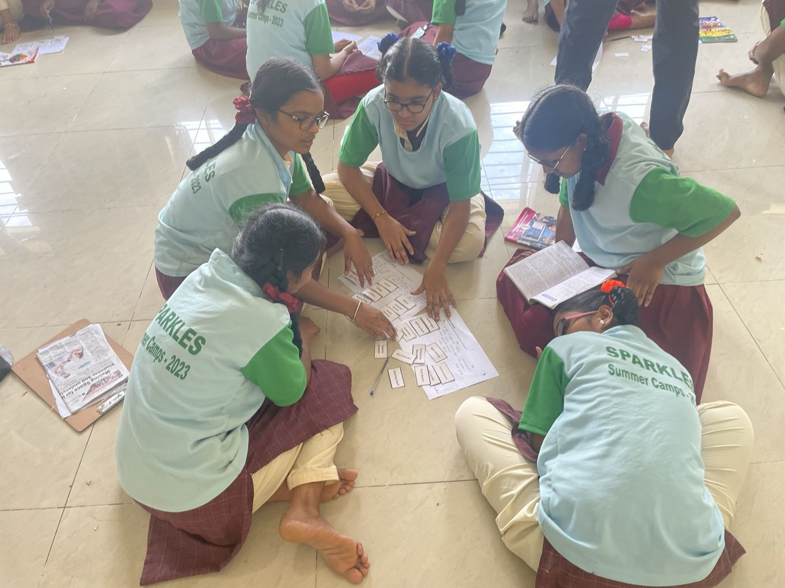
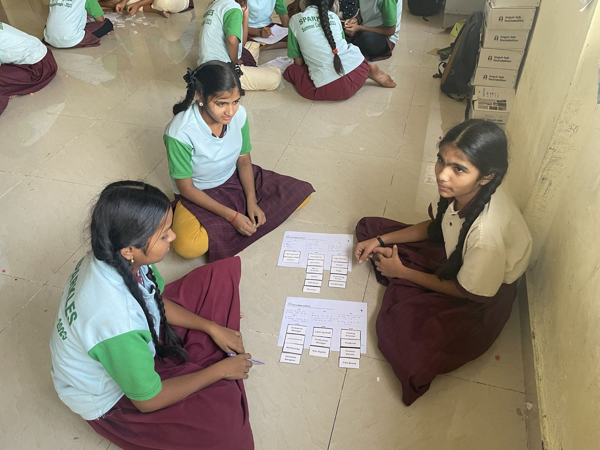
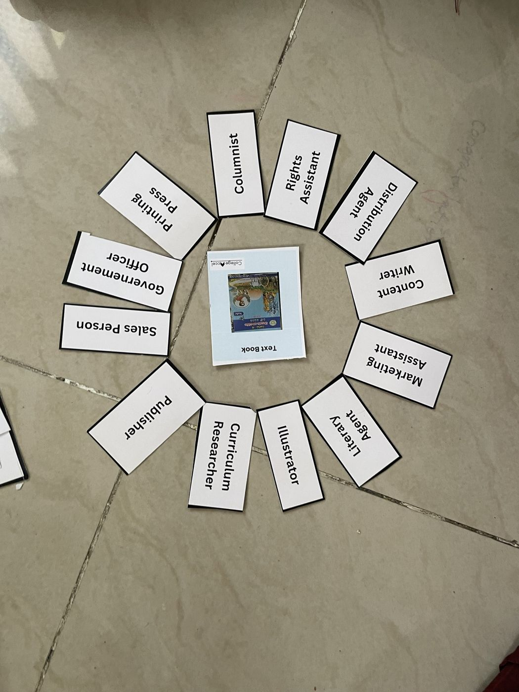
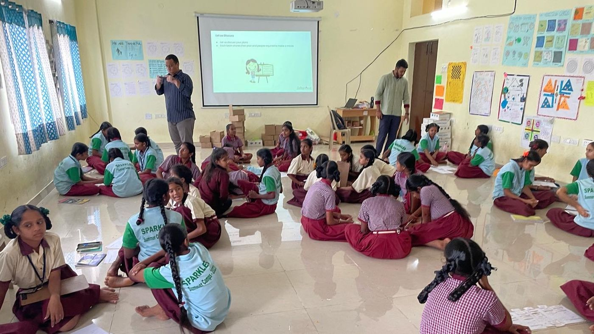
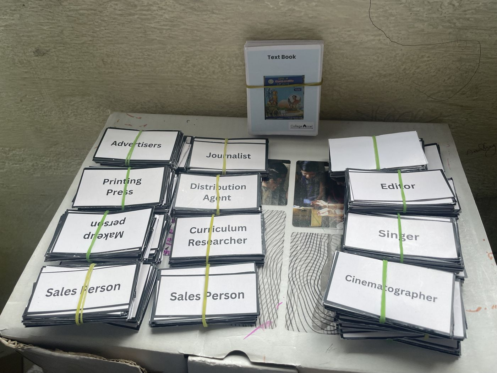

Career Compass
Our core career program. It helps students work out what they are genuinely interested in, then try careers out through career prototyping: small, low-risk ways to test a path, like talking to someone who does the job or working through a real task, before committing to it. Sessions follow our four steps, Inspire, Explore, Aspire and Plan, and use local role models so students see careers people from their own community have made real.
We've run it at Sri Amoga Junior College, at BITS Pilani's Hyderabad Campus for students from government schools, and at a summer camp at a government school in Hyderabad. We've also partnered with the Global Shapers Community's Hyderabad Hub on Shaping Teens, its career-guidance sessions for government-school teenagers. It works as a one-off workshop or as a weekly series.
- Activities to discover what you're interested in
- Career prototyping: test a career before choosing it
- Career games and comics that trace real people's paths
- Conversations with people from many different backgrounds




